1과목: 기계제작법
1. 단조완료 온도는 어느 정도로 하는가?
2. 분할대로서 5등분하려면 분할 크랭크의 회전수를 얼마로 하면 되는가? (다만, 웜기어비는 40:1이고, 신시나티형(型)이다.)
3. 선반의 크기를 정하는 규격이 아닌 것은?
4. 펀치와 다이의 시어각(shear angle)에 관한 설명 중 옳은 것은?
5. 공작물의 수가 적은 경우, 납등을 이용하여 전기, 가스로 가열 용융시켜 절삭공구의 뜨임에 많이 이용되는 방법은
6. 그림과 같이 접합할 모재의 한쪽에 긴 구멍을 뚫고, 판의 표면까지 가득히 용접하여 다른 모재와 접합하는 용접은
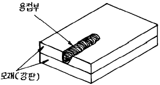
7. 전해연마의 특징으로 틀린 것은?
8. 기계공작에서 각도측정에 사용되는 측정기는?
9. 덧쇳물(riser,feeder)의 역할로서 옳지 않은 것은?
10. 표면경화의 효과를 얻기 위한 방법들 중 잘못된 것은?
11. 소성가공에서 열간가공과 냉간가공 구별의 기준온도는?
12. 디프 드로잉가공(deep drawing)의 설명 중 틀린 것은?
13. 둥근날 바이트로 선삭할 때 가공면의 이론적 표면 거칠기는 다음 어느 것으로 나타낼 수 있는가? (단, f는 이송, R는 공구의 날끝 반지름이다.)
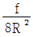
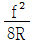
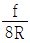
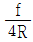
14. 주물의 정밀도가 높고 표면이 깨끗하며 다량생산이 가능하고 오직 비철 금속의 주조에만 한정되는 것은?
15. 빌트업에지(built-up edge)를 작게하는 설명으로 옳은 것은?
16. 평면도를 측정하는 데에, 상관이 없는 측정 기구는?
17. 다이얼게이지(dial gage)의 특성이 아닌 것은?
18. 불활성가스를 사용하는 용접은?
19. 원통내면의 정밀 다듬질의 일종이고 혼(hone)이라 부르는 각봉상 세입자로 만든 공구를 회전과 왕복운동을 시켜 공작물의 원통내면을 유압 또는 스프링으로 압력을 주어 가공하는 가공법은?
20. 연질금속을 다이에 넣고 펀치에 큰 힘을 가함으로서 튜브, 건전지 케이스(case)나 약품등의 용기를 제작하는 압출은?
2과목: 재료역학
21. 아래 그림에서와 같이 단붙이 원형축(Stepped Circular Shaft)의 풀리에 토크가 작용하여 평형상태에 있다. 이 축에 발생하는 최대 전단응력은 몇 MPa 인가?
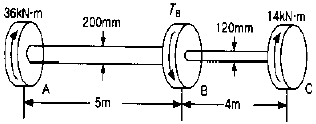
22. 단면 20cm x 30cm, 길이 6m의 목재로된 단순보의 중앙에 20 kN의 집중하중의 작용할 때, 최대 처짐(δ max)은? (단, 탄성계수 E = 10 GPa 이다.)
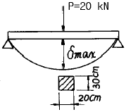
23. 양단이 단순지지된 길이 2m인 보에 균일분포 하중 w = 800 kN/m가 작용할 때 최대 처짐각은? (단, 보 단면의 관성모멘트는 I = 500x106 mm4이고, 탄성계수는 E = 200 GPa이다.)
24. 그림과 같은 보의 지점 반력 RA, RB 는?
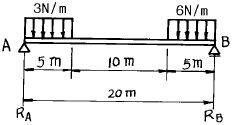
25. 외경이 내경의 1.5배인 중공축과 재질과 길이가 같고 지름이 중공축의 외경과 같은 중실축이 동일 회전수에 동일 마력을 전달한다면, 이때 중실축에 대한 중공축의 비틀림각의 비는 어느 것인가?
26. 한가지 재료(탄성계수 E)로 된 그림과 같은 원형 단면의 봉이 온도 t에서 to로 강하 되었을 때 ①의 부분과 ②의 부분의 응력의 비로 맞는 것은? (단, d1 = 1.41d2 이고, 선팽창 계수는 α 이다.)
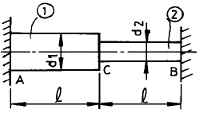
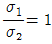
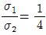
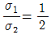
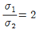
27. 다음과 같이 양단을 고정한 길이 ℓ , 단면적 A의 막대를 ΔT 만큼 온도를 올렸을때 막대에 생기는 응력 σ는? (단, 막대의 탄성계수를 E, 선팽창 계수를 α라 한다.)
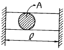
28. 그림과 같이 단면의 치수가 8 mm x 24 mm인 강대가 인장력 P = 15 kN을 받고 있다. 그림과 같이 30° 경사진면에 작용하는 전단응력은 몇 MPa 인가?
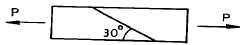
29. 단면적이 5 cm2, 길이가 60 cm인 연강봉을 천장에 매달고 20 ℃에서 0 ℃로 냉각시킬때 길이의 변화를 없게하려면 봉의 끝에 몇 kN의 추를 달아 주어야 하는가? (단, E = 200 GPa, α = 12x10-6/℃, 봉의 자중은 무시)
30. 동일재료로 만든 동일한 굽힘강도의 정사각형 단면보와 원형 단면보의 단면적비, 즉 정사각형 단면적/원형 단면적의 값은 얼마인가?
31. 최대 사용강도(σmax) = 240 MPa, 직경 1.5 m, 두께 3 ㎜의 강재 원통형 용기가 견딜 수 있는 압력은 몇 kPa 인가? (단, 안전계수(Sf)는 2이다.)
32. σx= 500 Pa, σy= 300 Pa, τxy= 100 Pa인 그림과 같은 요소내에 발생하는 최대 주응력의 크기는 몇 Pa 인가?
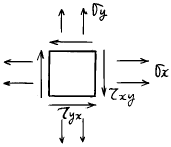
33. 그림과 같은 단주(短注)에서 편심 거리 e = 2 mm에 하중 P = 1 MN의 압축하중이 작용할 때 발생하는 최대응력은 몇 MPa인가?
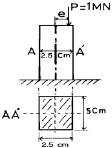
34. 재료가 축방향 하중을 받아 선형 탄성적으로 거동할 때 변형 에너지밀도(strain-energy density)를 구하는 식이 아닌 것은? (단, σ : 응력, ε: 변형률, E : 탄성계수)
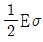
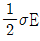
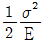
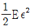
35. 3200 Nㆍm의 비틀림모멘트를 받는 둥근축이 있다. 이 축의 허용 전단응력을 60 MPa이라 하면 축의 지름은 최소 몇 cm로 해야 하는가?
36. 길이 240cm, 단면의 폭x높이 = 12cmx15cm의 단순보가 ω kN/m의 균일분포하중을 받고 있다. 이보의 허용굽힘응력 σa = 48 MPa일 때 허용할 수 있는 분포하중의 최대값은?
37. 다음 그림과 같이 균일분포 하중(ω)을 받는 고정지지보에서 최대 처짐 δmax는 얼마 정도인가? (단, ℓ 은 고정지지보의 길이, E는 탄성계수(N/m2) Ⅰ는 단면 2차모멘트(m4)이다.)
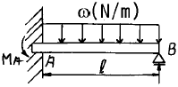
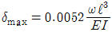
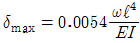
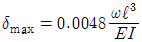
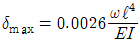
38. 탄성계수 E, 전단탄성계수 G, 프와송 비 μ사이의 관계식 중 옳은 것은?
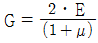
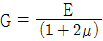
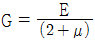
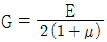
39. 직경 d인 원형단면의 원주에 접하는 축에 관한 단면 2차 모멘트는?
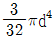
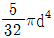
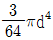
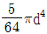
40. 한 점에서의 미소요소가 εx = 340x10-6, εy = 110x10-6, γxy = 180x10-6 인 평면 변형률을 받을 때 이 점에서의 주 변형률은?
3과목: 용접야금
41. 다음 중 변형시효에 가장 큰 영향을 미치는 것은?
42. 다음 금속 중에서 선팽창 계수가 가장 큰 금속은?
43. X-ray 회절 시험으로 알아 낼 수 없는 것은?
44. 금속강화법에 가장 해당치 않다고 생각되는 것은?
45. 변태속도론에 미치는 합금원소의 영향중 오스테나이트를 안정화 시키는데 효과가 가장 큰 원소는?
46. 주조시 주형에 냉금을 삽입하여 주물 표면을 급냉시키고 경도를 증가시킨 내마모성 주철은?
47. HAZ의 재질을 향상시키기 위하여 흔히 취하는 옳은 방법은?
48. 상온에서 순철(Fe)의 결정 격자는?
49. 티그 용접용 와이어 및 봉의 흡습방지 관리사항과 가장 거리가 먼 것은?
50. 일반 탄소강에서 탄소 함량의 증가가 기계적 성질에 미치는 영향이 아닌 것은?
51. 동일 용접입열에 비하여 판두께가 두꺼울수록 냉각속도는 어떻게 되는가?
52. 피복 아크용접에서 용접전류가 260[Ampere]이고 용접전압이 40[Volt] 이고 용접속도가 10[cm/min] 일때 용접입열은 얼마인가?
53. 고장력강재 열영향부의 최대 경도는 판두께가 (㉠)수록 또한 용접 입열량이 (㉡)수록 커진다. ( )안에 알맞는 말은?
54. 다음 그림은 용접부 조직을 나타낸 것이다. 옳게 짝지어진 것은?
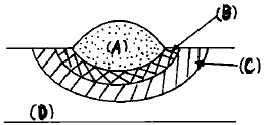
55. 18Cr-8Ni 스테인리스강에서 입간 부식을 방지하는 것으로 틀린 것은?
56. 고장력강의 노치인성을 증대시키는 합금원소는?
57. 용접상태에서 응고할 때 그 응고 온도차에 따라 농도의 차를 일으키는 현상을 무엇이라고 하는가?
58. 다음 중 경도가 가장 낮은 것은?
59. 다음 용접후 나타날수 있는 용접부의 조직중 충격인성이 가장 양호한 조직은?
60. 다음 중 용융철 중에 가장 용해도가 큰 기체는?
4과목: 용접구조설계
61. 용접시공시 최초층의 온도는 통상 아래 어느 온도와 비슷한가?
62. 그림과 같은 굽힘을 받는 용접부 선형의 중립축XX에 대한 단면 2차 모멘트로 가장 적합한 것은? (단, 용접두께를 t = 1로 보고 계산한 식이다.)
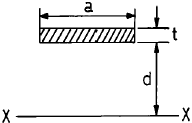
63. 용접부 피로시험에서 피로한도는 어느 정도이어야 하는가?
64. 용접봉의 소요량에서 용접봉의 가격을 올바르게 나타낸 식은?
65. 다음 그림은 어떤 형식의 용접 이음인가?
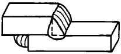
66. 용접에서 다음 설명중 옳지 못한 것은?
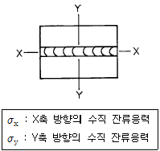
67. 다리길이(각장)가 같은 필릿용접에서 다리길이가 3배 증가하면 용착량은 어떻게 되나?
68. 다층 용접에서 변형균열 특히 열영향부의 라미나티어가 대상이 되는 균열 시험법은?
69. 용접이음 효율(η)을 나타내는 것은?
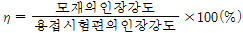
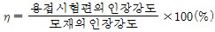
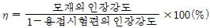
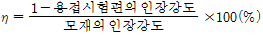
70. 다음 중 용접 결함이 아닌 것은?
71. 용접하여 H형 보(H beam)를 만들 때 그림에서 보는 바와 같이 절단하여 짝맞춤으로서 웨브(web)의 깊이를 증가시키는 수가 있다. 그 첫째 이유는?
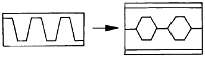
72. 그림과 같은 V형 맞대기 용접에서 인장력 P = 3000㎏f의 하중이 작용하였다면 인장응력(σ)은 얼마인가?
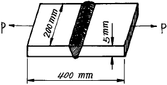
73. 용접시의 판상의 온도분포에 대한 설명 중 틀린 것은?
74. 고장력강의 용접결함 중 저온균열이 생기는 직접적인 원인이 아닌 것은?
75. 한끝에서 다른쪽 한끝을 향하여 연속적으로 진행하는 용착법으로 변형과 잔류응력이 그다지 문제가 되지 않을 때 이용되는 것은?
76. 용접 작업시간을 구하는 식으로 적당한 것은?
77. 그림과 같은 맞대기 용접부의 목두께는?
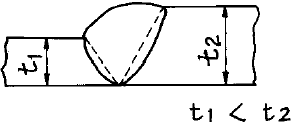
78. 평면 맞대기 용접이음에서 최대굽힘 응력은? (단,용접이음은 완전용입이며,굽힘 모멘트는 5000㎏fㆍ㎝, 판두께는 20㎜, 판폭은 300㎜이다.)
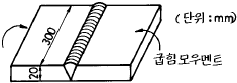
79. 용접변형을 경감하기 위한 용접법중 비석법을 바르게 설명한 것은?
80. 용접후에 발생하는 수축응력이 구조물의 응력 흡수 능력에 부정적인 영향을 미치지 않게 하기 위해서는 어떤 조건이 만족되어야 하는가?
5과목: 용접일반 및 안전관리
81. 가스절단에서 절단속도에 영향을 미치지 않는 것은?
82. 플라즈마(plasma) 용접에 관한 설명들 중 바르지 못한 것은?
83. 전기 아크 빛에 의하여 눈에 가벼운 염증이 있는 경우의 응급조치로 가장 적당한 것은?
84. 이산화탄소 아크 용접법의 특징을 설명한 것 중 틀린 것은?
85. 산소 아세틸렌 용접에서 작업이 끝난 후 뒷처리 하는 과정에서 제일 첫번째 해야 할 단계는?
86. 아크 용접기의 감전방지를 위해 가장 적당한 것은?
87. 무부하 전압 80V,아크전압 30V,아크전류 200A라 하면 용접기의 효율은 몇% 정도인가? (단,내부손실은 3㎾이다.)
88. 피복아크 용접에서 아크 블로우(Arc Blow)를 예방하기 위한 방법에 해당되지 않는 것은?
89. 저항 용접에 속하지 않는 것은?
90. 접합하기 위하여 겹쳐 놓은 두 부재의 한쪽에 둥근 구멍 대신에 좁고 긴 홈을 만들어 놓고 그곳을 용접하는 이음의 명칭은?
91. 기밀을 필요로 하는 용기, 긴 파이프등의 연속적인 용접 작업에 주로 사용되는 전기저항 용접은?
92. 절단하는데 있어 가스절단과 아크절단이 있는데 가스절단에 속하는 것은?
93. 다음 중 피복 아크 용접법으로 수평 필릿 용접을 전용으로 하는 일종의 반자동 용접장치로서 한 명이 여러 대의 용접기를 관리할 수 있는 고능률 용접법을 무엇이라 하는가?
94. 아크 용접피복제의 주요성분이 아닌것은?
95. 아세틸렌가스 절단과 비교하여 프로판가스 절단의 장점이 아닌 것은?
96. 불활성가스 텅스텐 용접에서 클리닝(cleaning) 작용이 일어나는 경우는?
97. 절단용 팁의 바깥쪽에 커버가 있고,또 점화용 보조팁이 있으며 연료가스로는 수소, 아세틸렌, 액화석유가스, 벤젠 등이 쓰여지는 절단기구는 어디에 사용되는가?
98. AW - 400 용접기의 표시에서 400 이란 무슨 뜻인가?
99. 용해아세틸렌병 취급방법 중 잘못된 것은?
100. 용접작업에 관한 안전사항 중 틀린 것은?